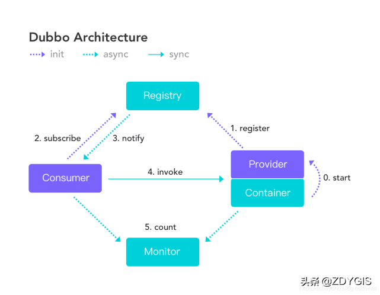
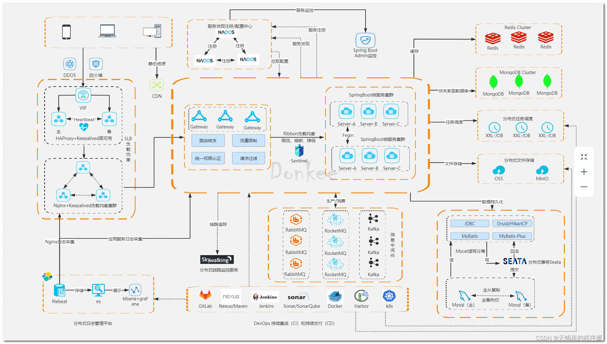

2023
MicroService
Framework
Dubbo
Provider：暴露服务的提供方，可以通过jar或者容器的方式启动服务；
Consumer：调用远程服务的服务消费方；
Registry：服务注册中心和发现中心；
Monitor：统计服务和调用次数，调用时间监控中心（dubbo的控制台页面中可以显示，目前只有一个简单版本）；
Container：服务运行的容器

spring cloud
服务注册发现 动态路由 负载均衡 配置管理 消息总线 熔断器 分布式链路追踪 大数据操作

Key
微服务的跨库查询
微服务拆分后，底层数据库也会拆分。
-
可以通过数据冗余，但是会带来数据延迟，数据不一致的潜在风险，共享的数据放到 ODS 数据层；
-
也可以通过建立领域层来提供Aggregator来解决对应问题；
业务域拆分数据库
微服务在代码层进行拆分，数据库实例还是共享模式；
微服务变更
微服务变更期间对相关调用方和被调用方的影响
微服务的领域编排
领域组合微服务实际上是一类比较特殊的微服务，即这类微服务本身完成多个微服务API接口的组合编排，完成分布式事务管理和协调，完成组合业务规则的实现和处理等。
比如:
对于订单提交这个操作，实际需要调用后端订单中心，预算中心，库存中心多个微服务接口
微服务网关和API网关
API网关一般具备独立的服务注册接入，负载均衡和路由能力,统一接入、安全防护、协议适配、流量管控、长短链接支持、服务容错能力
微服务网关是通过和服务注册中心的集成来实现服务注册发现，负载均衡和路由
服务容错
Definition
系统依赖的某个服务发生延迟或者故障，数秒内导致所有应用资源（线程，队列等）被耗尽，造成所谓的雪崩效应 (Cascading Failure)，导致整个系统拒绝对外提供服务。
principle
Design for failure
Solution
Timeout & Retry
Rate limiting & Load Shield
Circuit Breaker
Bulkhead Isolation
Fallback
自定义处理
fail-silent
fail-fast